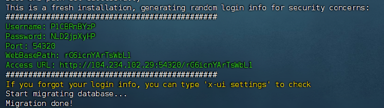
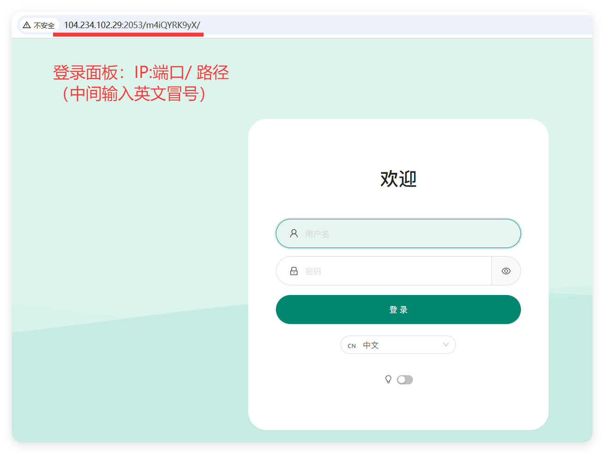
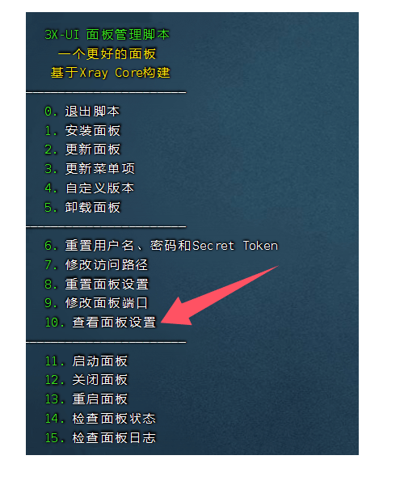

3X-ui 面板搭建！轻松搭建专属VPS节点
【开启CDN+自动证书申请】
🕓2025年09月05日
视频教程：▶
一、什么是3x-ui
3x-ui是一个支持多协议、多用户的Xray面板，具有过期日期、流量和IP限制功能。它能够同时支持Vmess、Vless、Trojan、
ShadowSocks和Wireguard等多种协议，为用户提供更灵活的选择。通过该面板，用户可以轻松管理多个用户账户，设置过期日期和流量限制，同时对IP进行限制，确保服务器资源的合理利用和安全性。
Xray面板的这些功能使得它成为搭建和管理代理服务器的理想选择，特别适用于需要高效管理和安全控制的场景。
3X-UI开源项目地址:https://github.com/MHSanaei/3x-ui
3X-ui 面板特点
- 系统状态监控
- 支持多用户、多协议，网页可视化操作
- 支持协议，包括 VMESS、VLESS、Trojan、Shadowsocks、Dokodemo-door、Socks、HTTP、wireguard
- 支持 XTLS 原生协议，包括 RPRX-Direct、Vision、REALITY
- 流量统计、流量限制、过期时间限制
- 可定制的Xray配置模板
- 支持HTTPS访问面板（自备域名+SSL证书）
- 支持一键SSL证书申请及自动续订
- 更多高级配置项请参考面板 >>点击访问

二、准备工作
1、域名一个，并托管到 Cloudflare
推荐在 Namesilo 进行购买（新用户1美元优惠券：kejixiaolu），因为他的 WHOIS 隐私 是免费的，可以适当的进行一下隐私保护，而且域名还都挺便宜的。（域名可以在 Namesilo 解析，也可以将域名托管到 Cloudflare ，解析更快。）
✰如果要开启 CDN 和申请证书，须将域名托管到 Cloudflare 。
2、一台境外 VPS 主流系统。
例如：Debian 12+ / Ubuntu 22.04+ / CentOS 8+
六六云VPS注册网址：https://kjxl.cc/666clouds（双ISP，支持tiktok）
全站九折优惠：XL666
年付七折优惠：year30off
Vultr 注册网址：https://kjxl.cc/vultr （按时计费，最低6$/月。）
搭建前，先检测服务器IP是否被封，确认IP可用。
已经解析的域名，Win+R 输入 CMD 回车：键入ping 空格输入你的域名，检查一下是否可以 ping 通。
3、下载并安装 FinalShell SSH 工具
Windows、macOS、Linux 版下载地址：点击下载
三、搭建 3X-UI 面板
1、安装系统
下面环境的安装方式，大家根据自己的系统选择命令安装就好了。
Debian/Ubuntu系统执行以下命令：
复制 apt update -y && apt install -y curl && apt install -y socat
CentOS系统执行以下命令：
复制 yum update -y && yum update -y && yum install -y socat
2、一键搭建3X-UI代码
复制 bash <(curl -Ls https://raw.githubusercontent.com/mhsanaei/3x-ui/master/install.sh)
在运行脚本以后，会提示你Would you like to customize the Panel Port settings? (If not, a random port will be applied) [y/n]:输入“y"
这里的意思是：您是否要自定义面板端口设置？（如果不想，将应用随机端口），建议输入”y“进行自定义配置。
3、设置面板端口
Please set up the panel port:【 后面输入你要设置的面板端口】

然后就安装完成了，下面会出现3x-ui面板URL地址、设置的端口、随机生成的用户登录信息。建议将信息保存下来，后面登录用。
如果你没有域名，到这一步就可以登录面板创建节点了！！！
四、3X-ui 面板登录
如果在安装过程中，全部都是默认【回车键】安装的话，用户名/密码/访问路径是随机的，而面板监听端口默认是2053，最好进入面板更改。登陆面板：在浏览器内输入“服务器IP:端口/路径”，进入登录页面

查看登录用户名、密码和面板路径，如下图：
在SSH输入“x-ui”，输入“10”查看面板设置。

再次登录面板：域名:端口/路径
PS：若你在正确完成了上述步骤之后，你没有安装证书的情况下，去用IP+端口号/路径的方式却不能访问面板，那请检查一下是不是你的浏览器自动默认开启了https模式，需要手动调整一下改成http方式，把“s”去掉，即可访问成功。
五、开启CDN和申请证书
如果要开启 CDN 和自动申请证书，须将域名托管到 Cloudflare 。
详细看视频：点此观看视频
六、关闭防火墙/放行端口
关闭防火墙：
复制 sudo ufw disable
放行端口 ：
例：如需放行80端口，代码：ufw allow 80
复制 ufw allow 80
七、各平台客户端
v2rayNG【需要最新版本】
Windows（v2rayN）：https://github.com/2dust/v2rayN/releases/tag/6.23
Android（v2rayNG）：https://github.com/2dust/v2rayNG/releases/tag/1.8.5
IOS（shadowrocket）：https://apps.apple.com/app/shadowrocket/id932747118
八、BBR 加速
SSH 里面可以输入x-ui操作命令，输入“22” 启用 BBR ，根据提示再输入1，BBR就启用了

验证 BBR 是否成功启用：
执行以下命令，确认 BBR 已被启用：
复制 sysctl net.ipv4.tcp_available_congestion_control
输出结果应包含 bbr，表示 BBR 已成功启用。
九、如何保护自己的IP不被墙被封？
1、使用的代理协议要安全，加密是必备，推荐使用vless+reality+vision协议组合，
2、因为有时节点会共享，在不同的地区，多个省份之间不要共同连接同一个IP，
3、连接同一个IP就算了，不要同一个端口，不要同IP+同端口到处漫游，要分开，
4、同一台VPS，不要在一天内一直大流量去下载东西使用，不要流量过高要切换，
5、创建【入站协议】的时候，尽量用【高位端口】，比如40000--65000之间的端口号。
提醒：为什么在特殊时期，比如：两会，春节等被封得最严重最惨？
同一个IP+同一个端口号，多个省份去漫游，跟开飞机场一样！不封你，封谁的IP和端口？
总结：不要多终端/多省份/多个朋友/共同使用同一个IP和端口号！使用3x-ui多创建几个【入站】，
多做几条备用，各用各的！各行其道才比较安全！GFW的思维模式是干掉机场，机场的特征个人用户不要去沾染，自然IP就保护好了。
附：Clash转链地址：
1、https://bianyuan.xyz/
2、https://sub-web.wcc.best